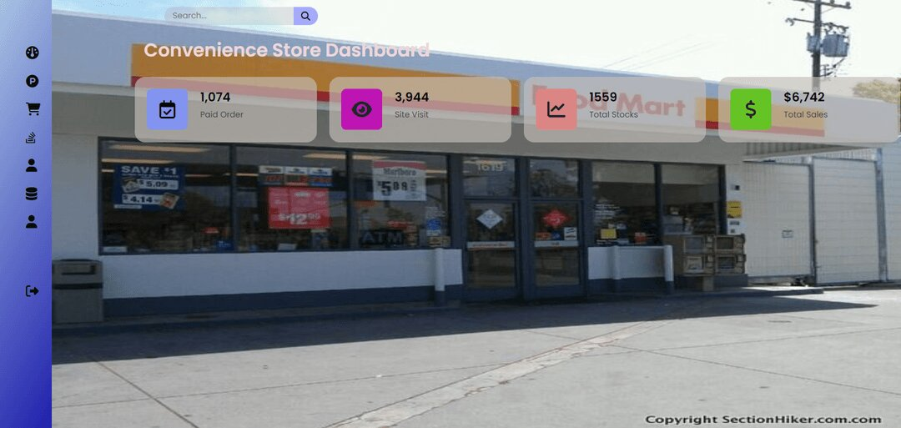
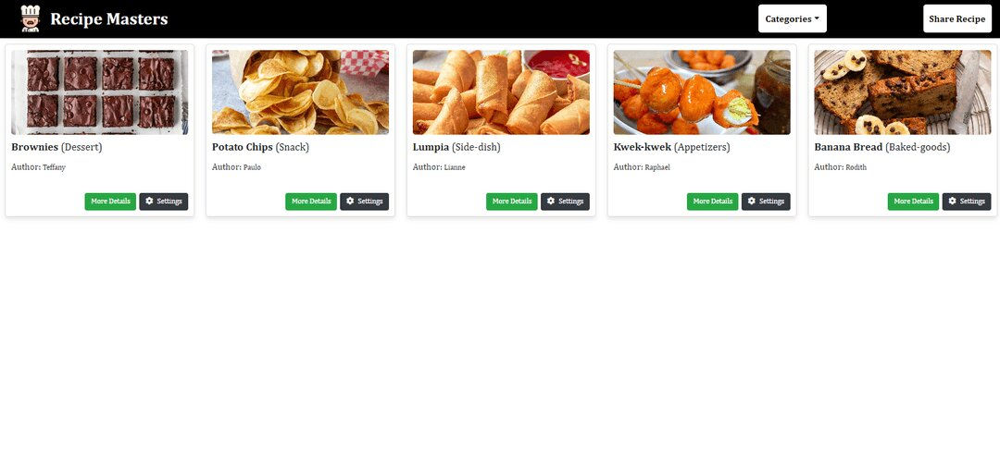
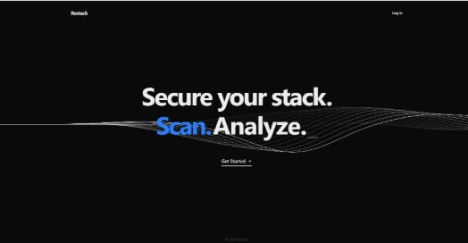

Three systems, three different problems — inventory, content, and security.
SYS-01

Drop project-01.jpg in images/ folderA PHP-built inventory management system designed for small convenience stores. It gives store owners a simple way to keep track of what's on the shelves, log incoming and outgoing stock, and stay on top of what needs restocking before it runs out.
Small stores often track inventory on paper or in scattered spreadsheets, which makes it easy to lose count of stock and miss reorder points. This system centralizes that process in a single PHP-driven application, so stock data stays accurate and easy to check at a glance.
SYS-02

Drop project-02.jpg in images/ folderRecipe Masters is a platform built to change the way people store, share, and explore recipes. Users can post their own recipes and edit their submissions, browse by category, or view everything in one comprehensive list. Administrative features keep oversight and management of the platform's data straightforward.
As more cooking enthusiasts move to digital platforms for recipe sharing and discovery, there's a real need for a centralized, easy-to-use system that works for novice and seasoned cooks alike. Letting users publish, edit, and remove their own recipes encourages a more active, cooperative community, while category-based browsing makes it easier to find exactly the kind of dish someone's looking for.
Recipe Masters brings posting, editing, and exploring recipes together in one user-friendly platform with the administrative tools to back it up. Whether it's a home cook or a more serious chef using it, the system is built to make sharing and discovering recipes easier for everyone involved.
SYS-03
Integrating Open-Source Vulnerability Scanners with Data Analytics

Drop project-03.jpg in images/ folderRestack is a web-based cybersecurity platform that helps organizations identify, analyze, and manage web application vulnerabilities through one centralized interface. It integrates several open-source security tools — OWASP ZAP, Wapiti, Nuclei, and WhatWeb — to provide comprehensive vulnerability detection and security analysis.
Web applications are increasingly targeted by attacks exploiting issues like broken access control, injection flaws, and outdated components. Many organizations rely on individual scanning tools in isolation, which leads to fragmented security assessments and limited visibility into real threats.
Restack consolidates findings from multiple scanners into a standardized format, letting users run centralized security assessments, monitor vulnerability trends, and generate actionable reports. The platform normalizes scanner output and presents results through an interactive dashboard built to support data-driven security decisions.